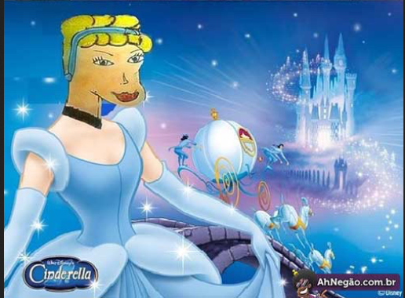
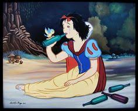

Quem é a cinderela?
Cinderela é um dos contos de fadas mais populares da Humanidade.
Sua origem tem diferentes versões. A versão mais conhecida é a do escritor francês Charles Perrault, de 1697, baseada num conto italiano popular chamado La gatta cenerentola ("A gata borralheira"). A mais antiga é originária da China, por volta de 860, semelhante à versão de Charles Perrault e a versão dos Irmãos Grimm. Nesta, porém, não há a figura da fada-madrinha e quem favorece a realização do desejo de ir ao baile são os pombos e a árvore que crescem no túmulo de sua mãe. Neste caso, Cinderela sabe palavras mágicas, usadas no imperativo, que auxiliam na transformação de seu pedido em realidade. No final, as irmãs malvadas ficam cegas quando são atacadas por pombos que lhes furam os olhos. Segundo outras versões a figura da fada madrinha na verdade é o espírito da falecida mãe da própria protagonista que trazia um vestido do céu para Cinderela usar no baile.
Principais personagens:
- Cinderela
- Príncipe
- Madrasta
- Irmã 1
- Irmã 2
- Sapato
- Abóbroa
- Fada marinha
- Passarinho
- Passarinho figurante
Principais fatos daas história:
- Cinderela é maltratatada pelas irmãs
- Cinderela fala com os ratos (Xaropinho, Xaropão)
- Cinderela se casa
- Cinderela coloca sapato
- Cinderela perde sapato
- Cinderela se perde no mundo
- Cinderela se junta aos Power Rangers
Onde estão os anões?
De acordo com o professor:
Coloca qualquer coisa aí
- Gustavo não Guanabara
| Aspecto | Branca de Nove | Cinderela |
|---|---|---|
| Familia | Perde os pais para o tigrinho e passa a viver com a madrasta | Cinderela |
| Principal vilã | A rainha mã, que sente inveja de sua beleza | A madrasta, que trata como empregada |
| Opbjeto Marcante | Maça envenenada | O sapatinho de cristal |

Por que não é baiana?
Porque, ACinderela Baiana é um filme de comédia musical brasileiro de 1998, dirigido por Conrado Sanchez e produzido por Antonio Polo Galante. O filme é uma biografia ficcional da ex-dançarina do É o Tchan! Carla Perez, sendo sua estreia no cinema. Sendo totalmente contrario a Cinderela original da disney